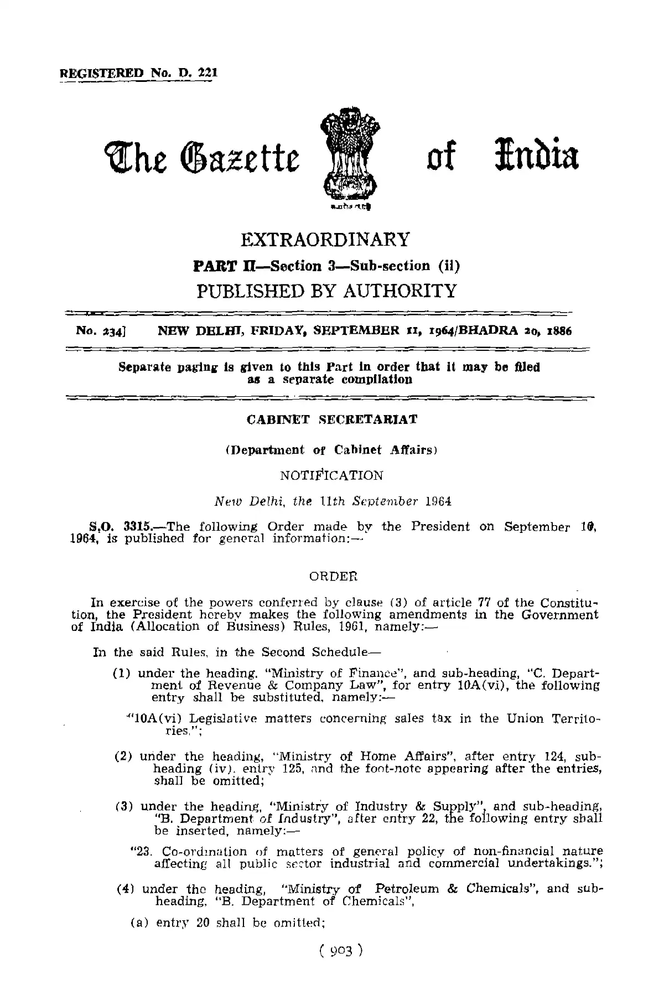
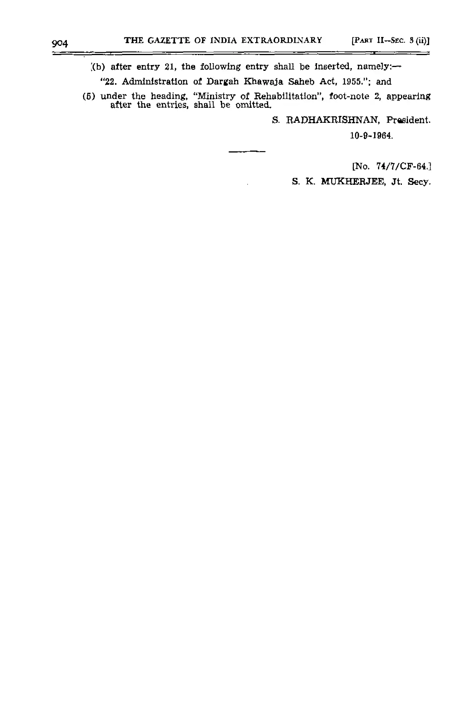

Amendment #34 (S.O. 3315, 1964)
6 changes: 0 to the First Schedule, 6 to the Second Schedule. 5 applied1 not applied
The order, page by page
Page 1 of 2

1234Schedule 2 › Ministry of Finance › Depart- ment of Revenue & Company Law › entry 10A › item vi
- 10A.
- vi. Legislative matters concerning sales tax in the Union Territories.
applied at schedule 2 › ministry MINISTRY OF FINANCE › department C › entry 10A › item vi in the Rules after #34
Schedule 2 › Ministry of Home Affairs › (iv); Schedule 2 › Ministry of Home Affairs › entry 125
not applied (the change could not be placed in the Rules as read; see How this document was read)
after Schedule 2 › Ministry of Industry & Supply › Department of Industry › entry 22
- 23. Co-ordination of matters of general policy of non-financial nature affecting all public sector industrial and commercial undertakings.
applied at schedule 2 › ministry MINISTRY OF INDUSTRY & SUPPLY › department B › group_heading VI › entry 23 in the Rules after #34
Schedule 2 › Ministry of Petroleum & Chemicals › Department of Chemicals › entry 20
applied at schedule 2 › ministry MINISTRY OF PETROLEUM & CHEMICALS › department B › entry 20 in the Rules after #34
Page 2 of 2

56after Schedule 2 › Ministry of Petroleum & Chemicals › Department of Chemicals › entry 21
- 22. Administration of Dargah Khawaja Saheb Act, 1955.
applied at schedule 2 › ministry MINISTRY OF PETROLEUM & CHEMICALS › department B › entry 22 in the Rules after #34
Schedule 2 › Ministry of Rehabilitation › note 2
applied at schedule 2 › ministry MINISTRY OF REHABILITATION › note 2 in the Rules after #34
read path unsure
How this document was read
Known issues
| Change | Issue | Known as |
|---|---|---|
| 2 | change 2: no group_heading (iv) under schedule 2 › ministry MINISTRY OF HOME AFFAIRS | Home Affairs' structure |
From the Government of India (Allocation of Business) Rules, 1961 and their amendments, as published by the Cabinet Secretariat (cabsec.gov.in), read by orgpedia. The readings of the older scanned gazettes have known gaps.